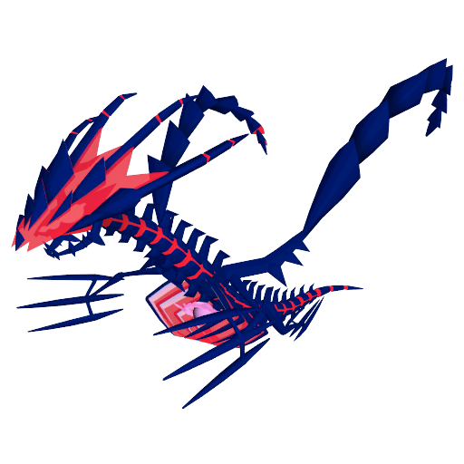

Du lundi 16 novembre, 10h au lundi 23 novembre, 20h
Bonus
• Possibilité de recevoir des Particules Max en attrapant des Pokémon Sauvages (sans le Gadget d'Exploration ni le Pokémon Go Plus+) ou après des Combats Dynamax
• Plus de Sources d'Énergie actives
• Éthernatos revient lors de cet Évènement, et ne pourra être attrapé qu'une fois, dans le Passe Go (les Dresseurs qui l'ont déjà ne pourront pas l'attraper à nouveau)
◦ Rappel : Éthernatos a besoin de beaucoup de Bonbons et de Bonbons L pour être boosté au max !
Pokémon Sauvages
Tous les Pokémon ayant déjà une forme Dynamax, hormis les Légendaires et Fabuleux
Combats Dynamax
De même, tous ces Pokémon pourront apparaitre lors des Combats Dynamax, et pourront avoir un Fond Spécial
Tâches d'Étude
Détails à venir
• Récompenses : Pokémon d'Évènement, Poussières Étoiles et des Bonbons Éthernatos
Passe Go
• Disponible à partir du lundi 16 novembre à 10h
◦ Accès anticipé & Passe Go Deluxe offert dès le samedi 14 novembre à 10h pour les Dresseurs ayant atteint l'échelon 1 du Passe Go - Âme Sauvage
• Des rencontres avec des Pokémon Dynamax
• Une rencontre avec Éthernatos (ou 100 Bonbons Éthernatos pour ceux qui l'ont déjà)
• Des Bonbons et Bonbons L Éthernatos
• Des Super Bonbons
• Des Poussières Étoiles
• Et plus encore !
Rang 15 : Double Poussières Étoiles de Capture
Rang 35 : Moitié moins de Bonbons et Poussières Étoiles nécessaires pour activer l'Effet Aventure Canon Dynamax d'Éthernatos
Rang 55 : Plus de Bonbons et Bonbons L obtenus aux Combats Dynamax

Éthernatos
Rang ?
PC du 100% :
Passe Go Deluxe
• Plus de rencontres avec des Pokémon Dynamax
• Plus de Bonbons et Bonbons L Éthernatos
• Des Baies Nanana Argentées
• Des Super Bonbons L
• Et plus encore !
Recommandations du chef
Si vous aimez les Combats Dynamax, cet Évènement est pour vous ! Vous pourrez viser les Pokémon intéressants pour ces combats, et cela me donnera en plus les raisons pour créer une nouvelle page "Meilleurs Pokémon Dynamax par type !"
Si vous aviez manqué Éthernatos à son premier passage, il ne faudra pas le louper cette fois ! Il est juste Excellent ! Dommage pour ceux qui l'ont déjà eu et pour qui il n'est pas bon... On attendra encore !